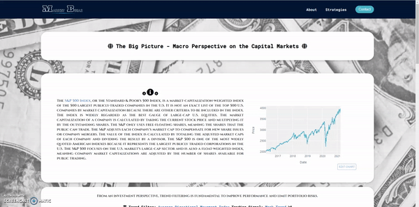

This is a Python/Flask application powered by Pandas and Plotly. It is designed to download historical data of S&P 500 from Yahoo Finance API using Pandas Datareader and applies Technical Analysis Library tools.
Market Bias is providing interactive visualizations with Plotly. There is also an example of simple and profitable trading strategy - Dual Momentum. This section of website contains a table of various stock indices grouped by the one year rate of change, using historical data downloaded from Yahoo Finance API and updated daily. Application is working with Python/Smtplib to handle data from the contact form and will automatically send Free Ebook in PDF format to email address provided by the user. Thanks to Flask abort() function custom error pages are displayed to the user when an exception occurs.

| Live | Code | Docker | Technologies |
|---|---|---|---|
 |     |